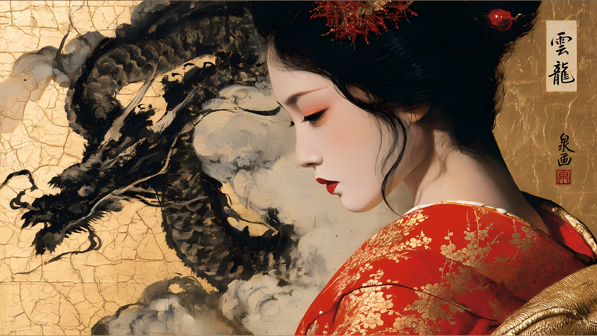
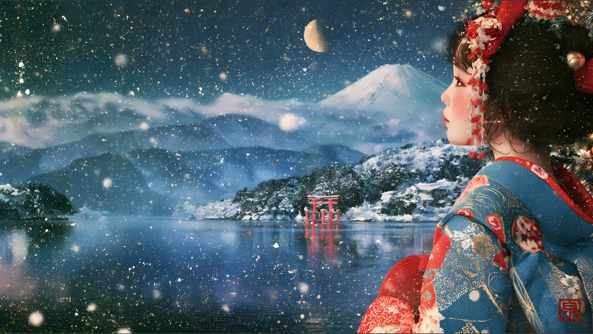
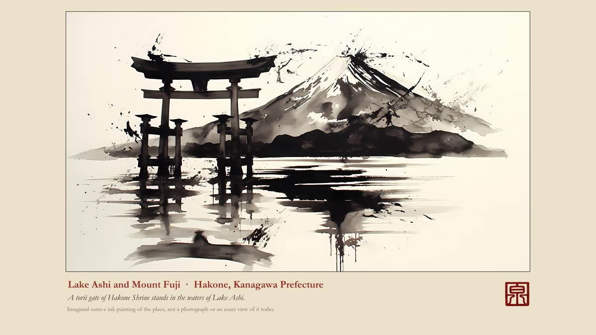
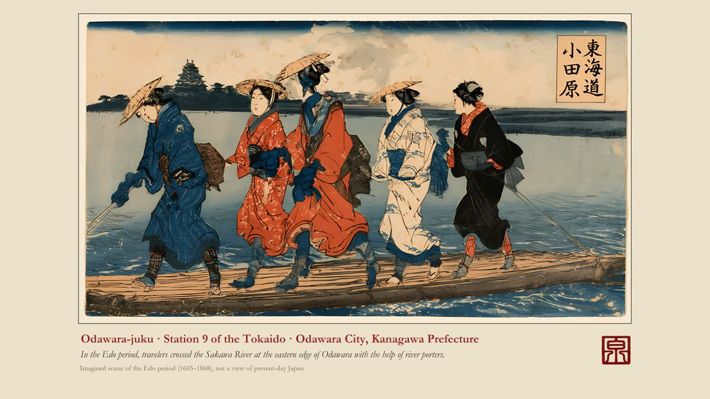
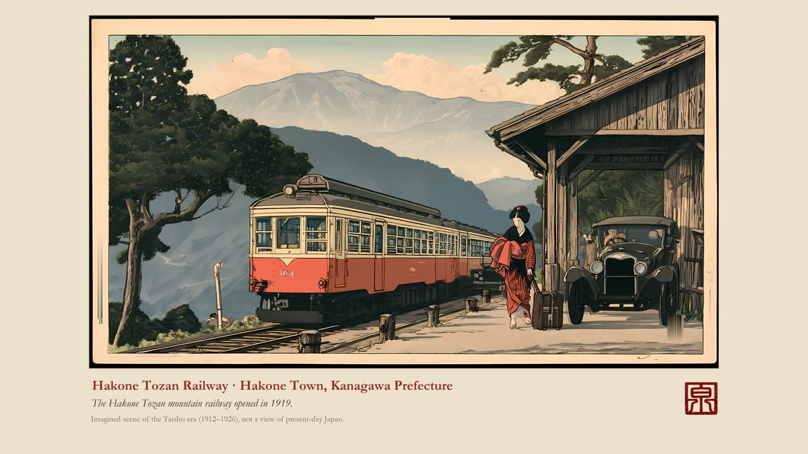
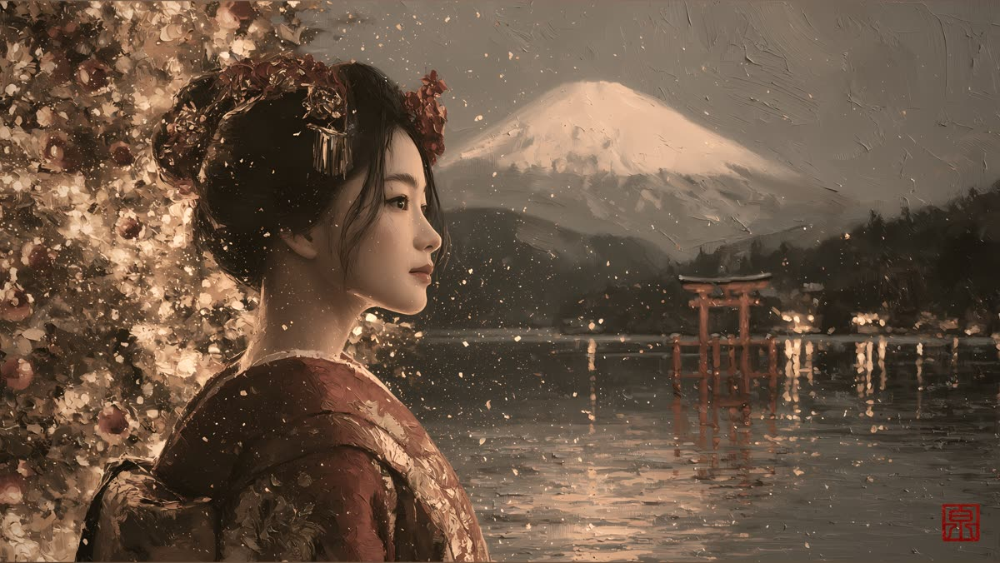
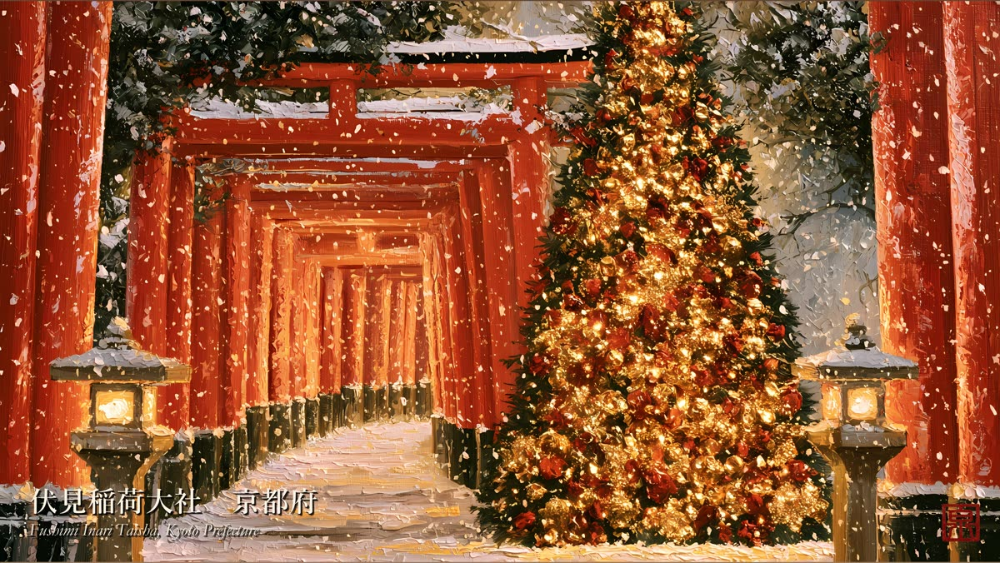
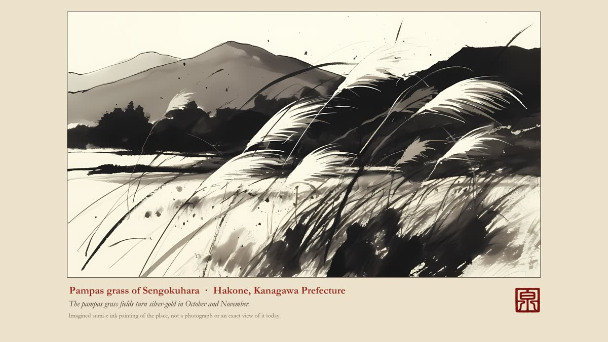

Geisha and kimono portraits, sumi-e ink, ukiyo-e style prints, Christmas in Japan and 2027 calendars — made for your Samsung Frame TV, screens and prints.
Visit the Etsy shopSee the collectionsEach collection is a digital download: high-resolution images in three screen sizes (16:9, 16:10, 3:2), every piece with my red seal 泉 (Izumi).

Geisha in kimono before gold leaf folding screens. 20 paintings.
View on Etsy →
Geisha in winter kimono with snow and Mount Fuji. 120 paintings, also in vintage, pastel and black & white.
View on Etsy →
Ink wash paintings of 51 real places around Hakone, Odawara and Mount Fuji.
View on Etsy →
Geisha and travellers along the old Tokaido road, in the style of woodblock prints. 34 paintings.
View on Etsy →
Hakone a hundred years ago, in the style of shin-hanga prints. 49 paintings.
View on Etsy →
A Japanese Christmas: geisha in red, blue, white, purple and black kimono. 215 paintings.
View on Etsy →
Imagined Christmas scenes at real places in Kyoto, Nara, Osaka, Tokyo, Hakone, Kanazawa and more.
View on Etsy →Printable PDF calendars (US Letter or A4) plus Frame TV images for every month.

I am Hideaki Izumi, an artist and AI director living in Odawara — the old castle town of the Hojo clan, at the gate of Hakone and Mount Fuji. As a personal project, I share the beautiful and fun sides of Japan with people around the world.
The shop opened on October 1, 2026. Every piece carries my seal 泉 (Izumi), and every place is named with its real prefecture.
How the art is made: I design each picture with AI image tools, then choose, correct and finish it by hand. Scenes with Christmas lights or historical figures are imagined, not photographs of present-day Japan, and each listing says so.
New paintings appear first on Instagram and Pinterest.